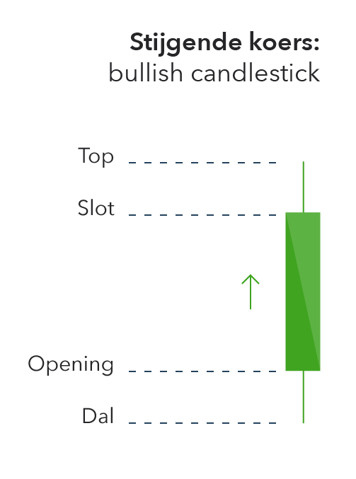
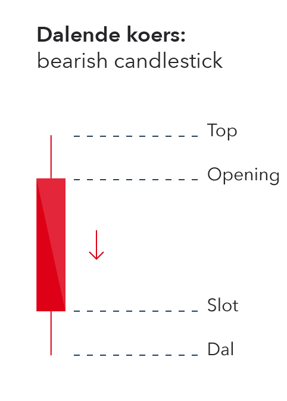

Wat is een Candlestick?
Een candlestick laat de koersbeweging van een waarde gedurende een bepaalde periode zien. Dit kan variëren van een minuut tot een dag, afhankelijk van de koersgrafiek. Hierbij worden vier verschillende koersniveaus weergegeven die een waarde heeft bereikt in de opgegeven periode: het laagste punt in de koers van een waarde, het hoogste punt en de openings- en slotkoers. Deze candlesticks staan bekend als "Japanse Candlesticks"
Candlestick patronen
Japanse candlesticks bieden een grafische weergave van de prijsontwikkeling van een bepaalde financiële markt of instrument. De verschijningsvorm van de 'prijs bars' in dit grafiek type toont gelijkenis met die van een kaars. Japanse Candlestick patronen hebben indicatieve waarde, het geeft de trader een idee over het
marktsentiment en inzicht in mogelijke toekomstige koersbewegingen.
Samengevat
Simpel gezegd dus, de candlesticks zelf kan je dus lezen. Maar Candlesticks samen kunnen ook een patroon vormen, dat kan jou als analist helpen bij jou perspectief op de markt.

